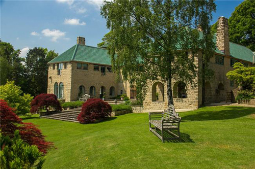
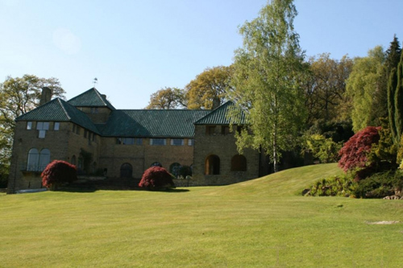
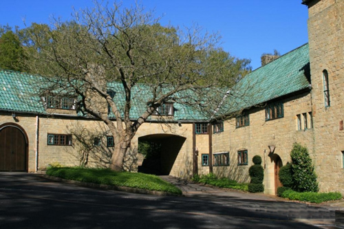
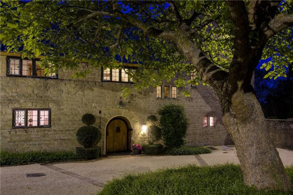
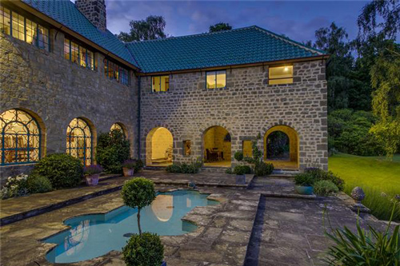
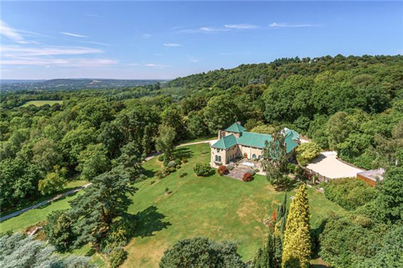

Marylands (a Spanish-style country house at Ewhurst, Surrey) used as 'Gervase Chevenix's house'. Designed during 1929–31 by Oliver Hill and inspired by Edwin Lutyens.

The gardens were planted by Gertrude Jekyll.

During World War II the house was let to Colonel Tatsumi, who served as Japanese Military Attaché to London, and Wladyslaw Sikorski, the Polish prime minister of his government in exile.


